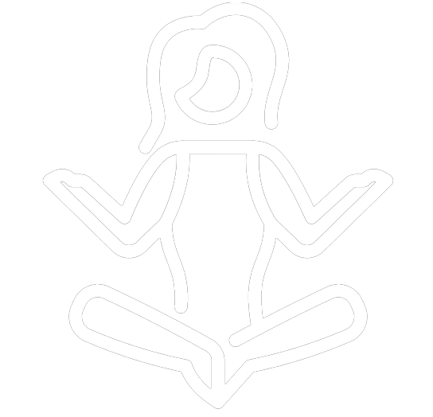

YOGA
El ioga, originari de l'antiga Índia, és una disciplina profunda i holística que transcendeix l'exercici físic. La seva història es remunta a més de 5.000 anys, amb les seves arrels que es troben en els textos sanskrits antics, com les Upanishads i els Vedas. La paraula "ioga" deriva de la paraula sànscrita "yuj," que significa unió o connexió, i aquest concepte és central en el ioga. La pràctica del ioga té com a objectiu principal la unió de la ment, el cos i l'ànima, aconseguint així un estat de benestar integral.
Els ensenyaments ioguistes van ser sistematitzats i elaborats en els "Yoga Sutras" de Patanjali, una obra clàssica que detalla les diferents vies i pràctiques del ioga. Aquesta obra identifica vuit passos que condueixen cap a la realització personal, incloent-hi la meditació, la pràctica de les postures (asanes), i la regulació de la respiració (pranayama).
En la societat occidental, el ioga ha guanyat popularitat al llarg del segle XX i XXI, ja que es reconeix com una eina eficaç per millorar la salut física i mental. Les postures de ioga, que varien des de les més suaus fins a les més desafiantes, promouen la força, la flexibilitat i l'equilibri físic. A més a més, la pràctica regular del ioga fomenta la relaxació, reduint l'estrès i millorant la qualitat del son. La meditació i la concentració també són components importants del ioga, ajudant a promoure una major consciència personal i emocional.
El ioga és més que una simple rutina d'exercicis; és un camí cap a l'autodescobriment i el benestar integral. Ofereix una eina poderosa per afrontar els desafiaments de la vida moderna i trobar equilibri tant a nivell físic com emocional, i així, ha esdevingut una pràctica global que beneficia persones de tots els àmbits de la vida.
Hatha Yoga
És una branca del yoga que es concentra principalment en les postures físiques i la respiració. Les sessions de Hatha Yoga solen ser suaus i adequades per a persones de tots els nivells de condició física. A través de la pràctica regular, els practicants desenvolupen flexibilitat, força muscular i una millor postura. Aquest tipus de yoga també posa un fort èmfasi en la quietud mental i l'equilibri emocional, mitjançant tècniques de meditació i relaxació.
Vinyasa Yoga
Aquesta varietat de yoga és dinàmica i fluida, caracteritzada per la connexió de moviments amb la respiració. Les transicions suaus entre les postures creen una experiència de flux constant. El Vinyasa Yoga millora la força muscular, l'equilibri i la coordinació, a la vegada que augmenta la consciència del cos i la respiració. Aquest tipus de pràctica també pot ser vigorosa, i és popular entre aquells que busquen un entrenament físic i mental desafiador.
Kundalini Yoga
Kundalini és un tipus de yoga més esotèric i espiritual. Es basa en l'alliberament de l'energia Kundalini, que es considera que resideix a la base de l'espina dorsal. Aquesta forma de yoga implica una combinació de postures, tècniques de respiració (com el pranayama), cants de mantra i meditació. El Kundalini Yoga busca despertar aquesta energia adormida i elevar-la a través del cos, el que pot portar a una major consciència espiritual i una sensació de pau i harmonia. És conegut per ser una pràctica més intensa en comparació amb altres formes de yoga.
Més que una simple activitat física
El ioga és una pràctica mil·lenària que ofereix nombrosos beneficis per al benestar físic i mental. A través de la combinació de postures, respiració i meditació, el ioga promou la flexibilitat i la força muscular, millorant així la salut física. A més, ajuda a reduir l'estrès i l'ansietat en promoure la relaxació i la concentració.
El ioga no només es tracta d'exercitar el cos, sinó també de reforçar la ment. Fomenta l'autoreflexió i l'autconeixement, la qual cosa pot conduir a un major equilibri emocional i una presa de decisions més conscient. A més a més, millora la qualitat del son i promou una sensació general de benestar.
A mesura que el món es torna cada vegada més frenètic, el ioga esdevé una eina inestimable per trobar pau interior i harmonia. Practicar regularment el ioga pot contribuir significativament a una vida més equilibrada i saludable, fet que el converteix en una disciplina de gran importància en la recerca del benestar integral.